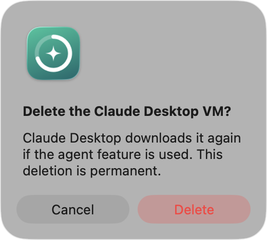
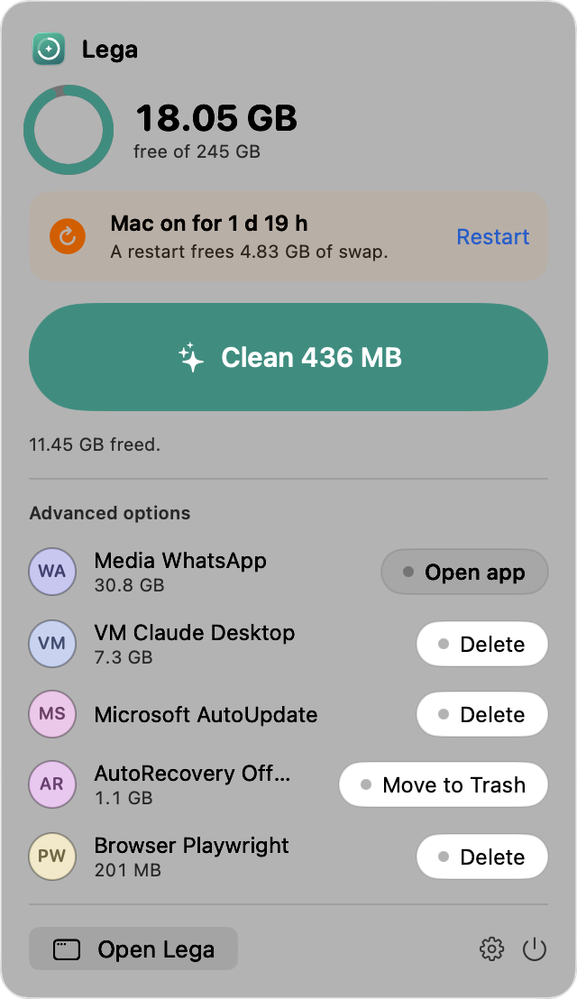

6.6 GB free. Your Mac is slowing down.

~/Library/Caches/Google/Chrome
~/Library/Caches/Homebrew
~/.npm/_cacache
~/Library/Caches/go-build
/var/folders/…/clang/ModuleCache
~/.codex/packages/standalone/releases
~/Library/Application Support/Comet/…
~/Library/Caches/us.zoom.xos
Which of these is safe to delete?
Lega
6.6 GBFree. Under 10 GB, a Mac can slow down.
Clean 11.89 GB
Old Codex versionsThe active and two newest are kept
7.5 GBCache CometRebuilt while you browse
436 MBCache Google ChromeRebuilt while you browse
748 MBCache HomebrewOld package downloads
543 MBCache npmNode.js package downloads
1.3 GBGo and node-gyp build cacheTemporary build output
547 MBComet is open, so Lega leaves it alone.

Anything big asks you first.
6.6 GB
free, after one click. 11.45 GB back.

One button, room to breathe.
Lega
Download for MacFree
lega.wiraperdana.com